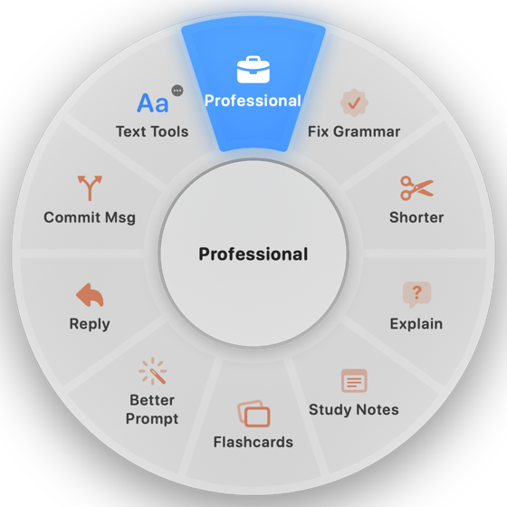
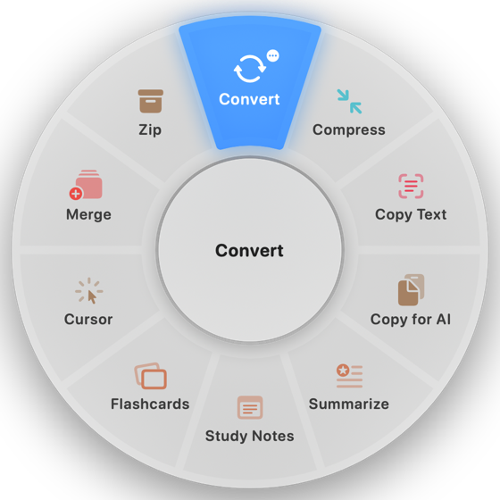
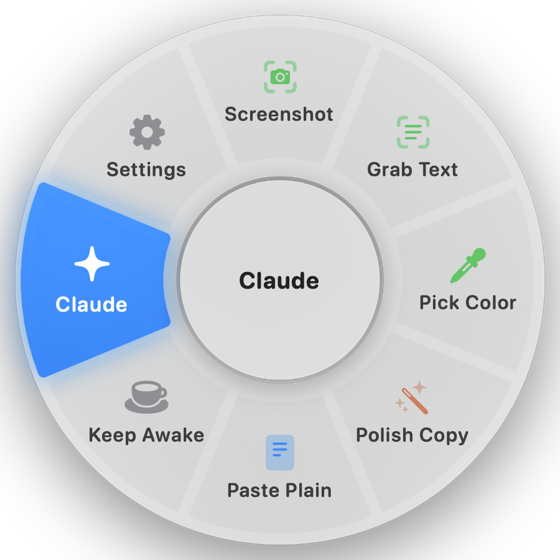
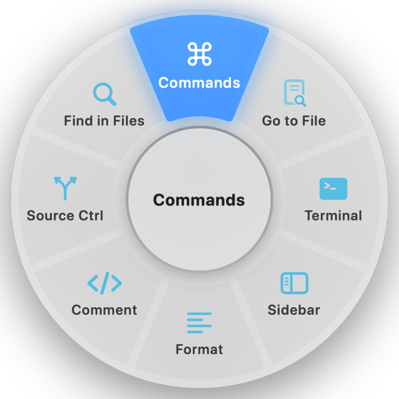
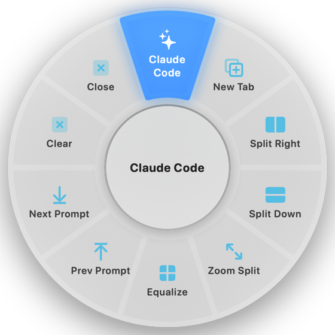
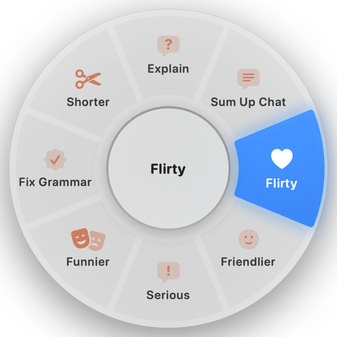
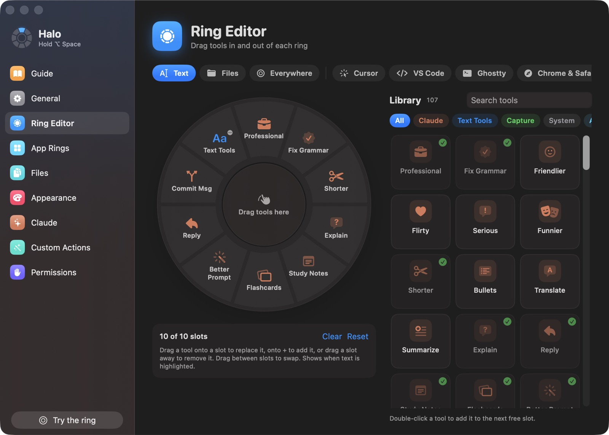
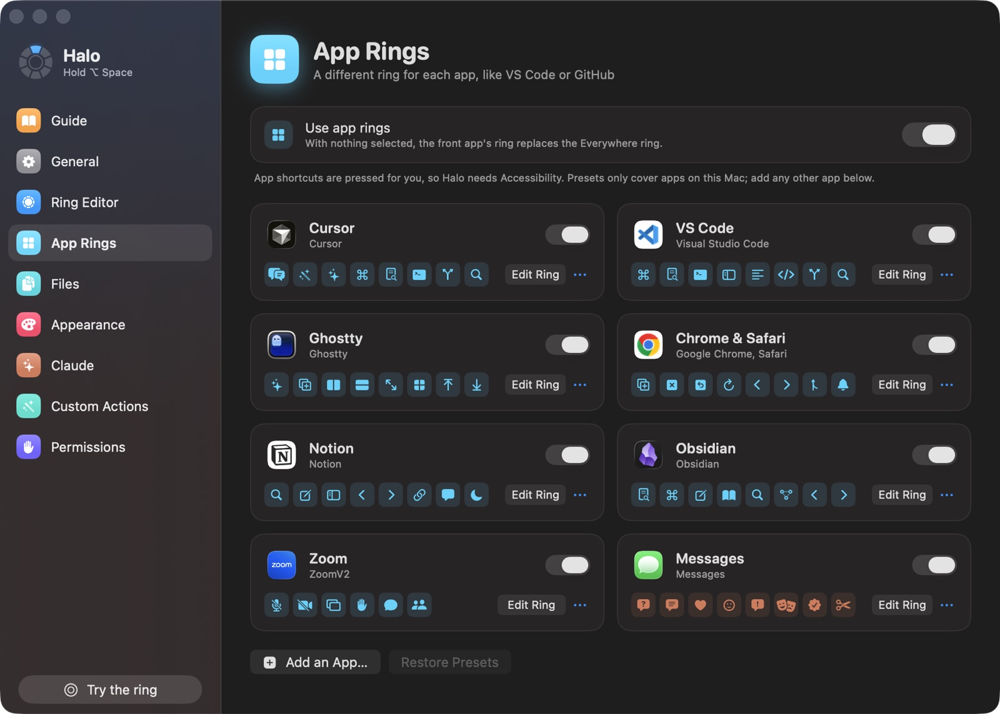
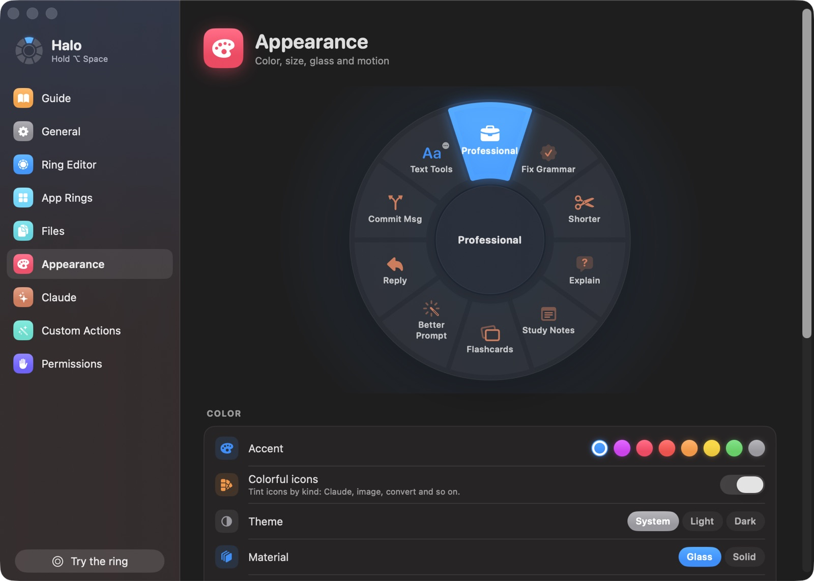
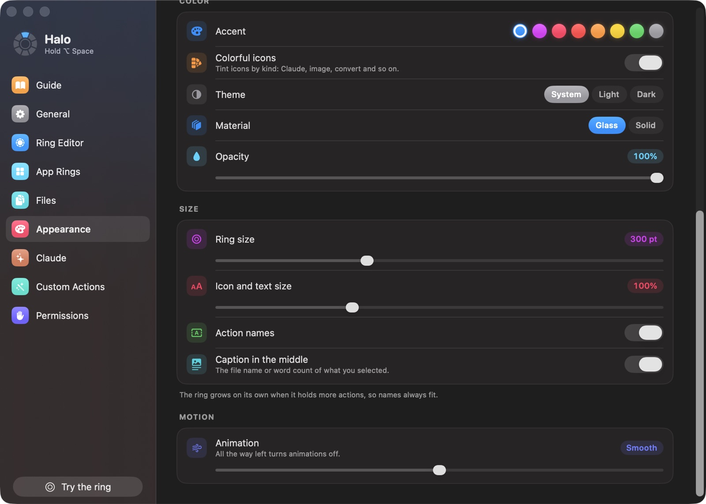

Highlighted text
Professional, Fix Grammar, Shorter, Explain, Reply, Study Notes, Flashcards and a commit message from a diff.
Hold ⌥ Space anywhere on your Mac and a ring of actions opens at your cursor, made for whatever you're pointing at. Flick toward one and let go.
Halo changes with what you're pointing at. Files get conversions, editors get their own shortcuts, chats get help with texting.
Each action keeps its direction, like numbers on a watch, so after a day you flick without looking.

Professional, Fix Grammar, Shorter, Explain, Reply, Study Notes, Flashcards and a commit message from a diff.

Convert, Compress, Copy Text from images, Copy for AI, Merge, Zip, Open in Cursor.

Screenshot, Grab Text from the screen, Pick Color, Paste Plain, Keep Awake.

Commands, Go to File, Terminal, Comment, Format, Source Control, pressing the editor's own shortcuts.

Start Claude Code in one flick, split right or down, zoom a split, jump between prompts.

Ask what their last text meant, sum up the chat, or make your reply funnier, friendlier or more serious.
Also ready-made: Chrome and Safari, Notion, Obsidian and Zoom. Add a ring for any other app in a minute.
Drag any of 100+ tools onto any ring, or add your own Claude prompts, shortcuts, links and scripts. Size, text and motion all bend to how you work.




Text tools and file conversions run on your Mac with macOS's own converters. Results are saved next to the original, never over it.
Claude actions send only what you selected, through your own Claude Code login or API key. Nothing else leaves your Mac.
No sign-up and no analytics. The only other request is a daily check on GitHub for a new version.
Halo is free and isn't on the App Store, so there's one extra click the first time.
Download Halo.zip, unzip it, drag Halo.app into Applications and open it from there.
Halo isn't notarized, so macOS asks first. In System Settings › Privacy & Security, click Open Anyway. Once.
It ticks off each step: allow Accessibility, then click OK when macOS asks if Halo can control Finder.
For the Claude actions, run claude once to sign in, or paste your own API key. Everything else works without it.
Yes. It's open source under the MIT license, with no paid tier. The Claude actions use your own Claude plan through Claude Code, or your own API key.
Only for the Claude actions: rewrites, explanations, study notes, commit messages. Text tools, file conversions, screenshots and every app ring work without it.
Notarization needs a paid Apple developer account, which this free project doesn't have. The code is all on GitHub and each release is built from it by GitHub Actions. Click Open Anyway once and macOS remembers.
To read the text you've highlighted, paste results back, and press each app's shortcuts. Halo only reads your selection when you open the ring.
Halo's menu says Update to Halo … when a new version is out. Replace Halo.app in Applications, then turn Halo off and on again in Privacy & Security › Accessibility. Your settings carry over.
Turn off Open at login, quit Halo from its menu and drag it to the Trash. The README has the commands to clear its settings and permissions too.
Yes. It's a universal app for Apple silicon and Intel, on macOS 14 Sonoma or later.
Open How to Use Halo from its menu for fixes to the common problems, or open an issue on GitHub.